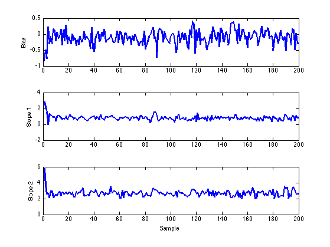
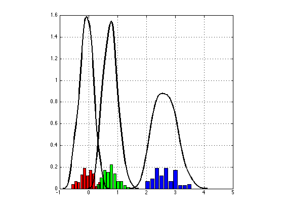

Hybrid Monte Carlo Sampling for Bayesian Logistic Regression
Contents
Load data
The variable 'data' is returned as a struct with covariates X of size NxD and labels Y of size Nx1.
setSeed(1);
[dataDir, outDir] = setupDir;
data = getBinData('ripley', dataDir);
[N, D] = size(data.X);
Hyperparameters
Hypers should be a struct with any hyperparameters needed for the model. Also useful to send the dimensions of the data. These dimensions are useful for models such as Factor Analysis where we must also specify the number of latent dimensions. Also, where we are sampling more than one parameter (e.g., again factor analysis, sampling both factor and coefficients), these dimensions allow us to index correctly.
hypers.dims.N = N; hypers.dims.D = D; hypers.alpha = 1;
HMC Settings
Specify a log probability function, which return the the joint probability and the first derivative with respect to all parameters that are to be sampled.
logprob = @bayesLogReg; nSamples = 200; burnin = 100; % These are parameters to set for HMC options = struct(... 'nSamples', nSamples, ... 'nLeaps', 200, ... 'stepSize', 0.1, ... 'display',0);
Initialisation
Here we add one dimension for the bias term.
options.initVec = rand(D+1,1);
Running HMC
disp('Running HMC ...');
[samples, stats] = hmc(logprob, data, hypers, options);
Running HMC ... HMC Complete
Posterior Analysis
1. Trace Plots examining the bias and params.
figure; subplot(3,1,1); plot(samples(:,1), 'LineWidth',2); ylabel('Bias'); subplot(3,1,2) plot(samples(:,2), 'LineWidth',2); ylabel('Slope 1'); subplot(3,1,3) plot(samples(:,3), 'LineWidth',2); ylabel('Slope 2'); xlabel('Sample'); snapnow;
2. Effective Sample Size
ESS = CalculateESS(samples(burnin+1:end,:), nSamples - burnin -1);
disp('ESS Values: [bias slope1 slope2]');
disp(ESS);
ESS Values: [bias slope1 slope2]
91.037 100 81.595
3. Compare Parameter Estimates
betaMean = mean(samples);
B = mnrfit(data.X,data.Y+1);
disp({'Post Mean', 'Max Lik'})
disp([betaMean' -B])
'Post Mean' 'Max Lik'
-0.11374 -0.12281
0.80188 0.89296
2.6634 2.9799
4. Parameter Histograms
figure; col = getColorsRGB; for i = 1:size(samples,2) % subplot(1,3,i); [n, xout] = hist(samples(burnin+1:end,i)); bar(xout,n./sum(n),'FaceColor',col(i,:)); axis square; hold on; [f, xi] = ksdensity(samples(burnin+1:end,i)); plot(xi,f,'LineWidth',2,'Color','k'); grid on; end; snapnow;
Shakir Mohamed, 2012